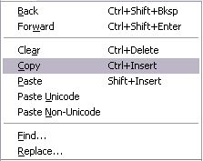
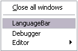
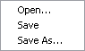
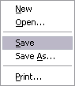
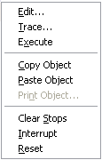
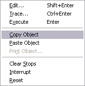
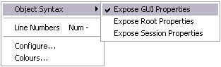
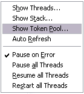
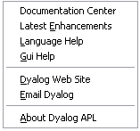

The Session MenuBar (⎕SE.mb) contains a set of menus as follows.
The File menu (⎕SE.mb.file) provides a means to execute those APL System Commands that are concerned with the active and saved workspaces. The contents of a typical File menu and the operations they perform are illustrated below.
Table 33: File Menu Operations
| Item | Action | Description |
|---|---|---|
| New | [WSClear] | Prompts for confirmation, then clears the workspace |
| Open | [WSLoad] | Prompts for a workspace file name, then loads it |
| Copy | [WSCopy] | Prompts for a workspace file name, then copies it |
| Save | [WSSave] | Saves the active workspace |
| Save As | [WSSaveas] | Prompts for a workspace file name, then saves it |
| Export | [Makeexe] | Creates a bound executable, an OLE Server, an ActiveX Control, or a .Net Assembly |
| Export to Memory | [MakeMemory Assembly] | Creates an in-memory .Net Assembly |
| Close AppDomain | [CloseAppDomain] | Closes .NET App Domain |
| Drop | [WSDrop] | Prompts for a workspace file name, then erases it |
| [PrintFnsInNS] | Prints functions and operators in current namespace | |
| Print Setup | [PrintSetup] | Invokes the print set-up dialog box |
| Continue | [Continue] | Saves the active workspace in CONTINUE.DWS and exits APL |
| Exit | [Off] | Exits APL |
The Export… menu item allows you to create a bound executable, an OLE Server (in-process or out-of-process), an ActiveX Control or a .Net Assembly.
The dialog box used to create these various different files offers selective options according to the type of file you are making. The system detects which of these types is most appropriate from the objects in your workspace. For example, if your workspace contains an ActiveXControl namespace, it will automatically select the ActiveX Control option.

The Create bound file dialog box contains the following fields. These will only be present if applicable to the type of bound file you are making.
| Item | Description |
|---|---|
| File name | Allows you to choose the name for your bound file The name defaults to the name of your workspace with the appropriate extension. |
| Save as type | Allows you to choose the type of file you wish to create. |
| Runtime application | If this is checked, your application file will be bound with the Run-Time DLL. If not, it will be bound with the Development DLL. The latter should normally only be used to permit debugging. |
| Console application | Check this box if you want your executable to run as a console application. This is appropriate only if the application has no graphical user interface. |
| Enable Native Look and Feel | If checked, Native Look and Feel will be enabled for your bound file. |
| Icon file | Allows you to associate an icon with your executable. Type in the pathname, or use the Browse button to navigate to an icon file. |
| Command line | For an out-of-process COM Server, this allows you to specify the command line for the process. For a bound executable, this allows you to specify command-line parameters for the corresponding Dyalog APL DLL. |
Pressing the Version button brings up the Version Information dialog box shown below.
This dialog box allows you to specify versioning information that will be stored in your bound file.

The Edit menu (⎕SE.mb.edit) provides a means to recall previously entered input lines for re-execution and for copying text to and from the clipboard.
 |  |
| Unicode Edition | Classic Edition |
Table 34: Edit menu operations
| Item | Action | Description |
|---|---|---|
| Back | [Undo] | Displays the previous input line. Repeated use of this command cycles back through the input history. |
| Forward | [Redo] | Displays the next input line. Repeated use of this command cycles forward through the input history. |
| Clear | [Delete] | Clears the selected text |
| Copy | [Copy] | Copies the selection to the clipboard |
| Paste | [Paste] | Pastes the text contents of the clipboard into the session log at the current location. The new lines are marked and may be executed by pressing Enter. |
| Paste Unicode | [Pasteunicode] | Same as Paste, but gets the Unicode text from the clipboard and converts to ⎕AV. Classic Edition only. |
| Paste Non-Unicode | [PasteAnsi] | Same as Paste, but gets the ANSI text from the clipboard and converts to ⎕AV. Classic Edition only. |
| Find | [Find] | Displays the Find dialog box |
| Replace | [Replace] | Displays the Find/Replace dialog box |
The View menu (⎕SE.mb.view) toggles the visibility of the Session Toolbar, StatusBar, and Language Bar.

Table 35: View menu operations
| Item | Action | Description |
|---|---|---|
| Toolbar | Shows/Hides Session toolbars | |
| Statusbar | Shows/Hides Session statusbars | |
| LanguageBar | Shows/Hides Language Bar |
This contains a single action (⎕SE.mb.windows) which is to close all of the Edit and Trace windows and the Status window.

Table 36: Window menu operations
| Item | Action | Description |
|---|---|---|
| Close all Windows | [CloseAll] | Closes all Edit and Trace windows |
Note that [CloseAll] removes all Trace windows but does not reset the State Indicator.
In addition, the Window menu will contain options to switch the focus to any subsidiary windows that are docked in the Session as illustrated above.
The Session menu (⎕SE.mb.session) provides access to the system operations that allow you to load a session (⎕SE) from a session file and to save your current session (⎕SE) to a session file. If you use these facilities rarely, you may wish to move them to (say) the Options menu or even dispense with them entirely.

Table 37: Session menu operations
| Item | Action | Description |
|---|---|---|
| Open | [SELoad] | Prompts for a session file name, then loads the session from it, replacing the current one. Sets the File property of ⎕SE to the name of the file from which the session was loaded. |
| Save | [SESave] | Saves the current session (as defined by ⎕SE) to the session file specified by the File property of ⎕SE. |
| Save As | [SESaveAs] | Prompts for a session file name, then saves the current session (as defined by ⎕SE) in it. Resets the File property of ⎕SE. |
The Log menu (⎕SE.mb.log) provides access to the system operations that manipulate Session log files.

Table 38: Log menu operations
| Item | Action | Description |
|---|---|---|
| New | [NewLog] | Prompts for confirmation, then empties the current Session log. |
| Open | [OpenLog] | Prompts for a Session log file, then loads it into memory, replacing the current Session log |
| Save | [SaveLog] | Saves the current Session log in the current log file, replacing its previous contents |
| Save As | [SaveLogAs] | Prompts for a file name, then saves the current Session log in it. |
| [PrintLog] | Prints the contents of the Session log. |
The Action menu (⎕SE.mb.action) may be used to perform a variety of operations on the current object or the current line. The current object is the object whose name contains the cursor. The current line is that line that contains the cursor. The Edit, Copy Object, Paste Object and Print Object items operate on the current object. For example, if the name SALES appears in the session and the cursor is placed somewhere within it, SALES is the current object and will be copied to the clipboard by selecting Copy object or opened up for editing by selecting Edit.
Execute runs the current line; Trace traces it.
|  |  |
| Unicode Edition | Classic Edition |
Table 39: Action menu operations
| Item | Action | Description |
|---|---|---|
| Edit | [Edit] | Edit the current object |
| Trace | [Trace] | Executes the current line under the control of the Tracer |
| Execute | [Execute] | Executes the current line |
| Copy Object | [ObjCopy] | Copies the contents of the current object to the clipboard. |
| Paste Object | [ObjPaste] | Pastes the contents of the clipboard into the current object, replacing its previous value |
| Print Object | [ObjPrint] | Prints the current object. |
| Clear Stops | [ClearTSM] | Clears all ⎕STOP, ⎕MONITOR and ⎕TRACE settings |
| Interrupt | [Interrupt] | Generates a weak interrupt |
| Reset | [Reset] | Performs )RESET |
The Options menu (⎕SE.mb.options) provides configuration options.

Table 40: Options menu operations
| Item | Action | Description |
|---|---|---|
| Expose GUI Properties | [ExposeGUI] | Exposes the names of properties, methods and events in GUI objects |
| Expose Root Properties | [ExposeRoot] | Exposes the names of the properties, methods and events of the Root object |
| Expose Session Properties | [ExposeSession] | Exposes the names of the properties, methods and events of ⎕SE |
| Line Numbers | [LineNumbers] | Toggle the display of line numbers in edit and trace windows on/off |
| Configure | [Configure] | Displays the Configuration dialog box |
| Colours | [ChooseColors] | Displays the Colours Selection dialog box |
The values associated with the Expose GUI, Expose Root and Expose Session options reflect the values of these settings in your current workspace and are saved in it.
When you change these values through the Options menu, you are changing them in the current workspace only.
The default values of these items are defined by the parameters default_wx, PropertyExposeRoot and PropertyExposeSE which may be set using the Object Syntax tab of the Configuration dialog.
The Tools menu (⎕SE.mb.tools) provides access to various session tools and dialog boxes.
 |
Table 41: Tools Menu Operations
| Item | Action | Description |
|---|---|---|
| Explorer | [Explorer] | Displays the Workspace Explorer tool |
| Search | [WSSearch] | Displays the Workspace Search tool |
| Status | [Status] | Displays or hides the Status window |
| AutoStatus | [AutoStatus] | Toggle; if checked, causes the Status window to be displayed when a new message is generated for it |
| Event Viewer | [EventViewer] | Displays or hides the Event Viewer |
| Properties | [ObjProps] | Displays a property sheet for the current object |
The Threads menu (⎕SE.mb.threads) provides access to various session tools and dialog boxes.

Table 42: Threads Menu Operations
| Item | Action | Description |
|---|---|---|
| Show Threads | [Threads] | Displays the Threads Tool |
| Show Stack | [Stack] | Displays the SI Stack window |
| Show Token Pool | [TokenPool] | Displays the Token Pool window |
| Auto Refresh | [ThreadsAutoRefresh] | Refreshes the Threads Tool on every thread switch |
| Pause on Error | [ThreadsPauseOnError] | Pauses all threads on error |
| Pause all Threads | [ThreadsPauseAll] | Pauses all threads |
| Resume all Threads | [ThreadsResumeAll] | Resumes all threads |
| Restart all Threads | [ThreadsRestartAll] | Restarts all threads |
The Help menu (⎕SE.mb.help) provides access to the help system which is packaged as a single Microsoft HTML Help compiled help file named help\dyalog.chm.

Table 43: Help menu operations
| Label | Action | Description |
|---|---|---|
| Documentation Center | [DocCenter] | Opens your web browser on help\index.html which displays an index to the on-line PDF documentation and selected internet links. |
| Latest Enhancements | [RelNotes] | Opens help\dyalog.chm, starting at the first topic in the Version 14.0 Release Notes section. Note that previous Release Notes are also included for your convenience. |
| Language Help | [LangHelp] | Opens help\dyalog.chm, starting at the first topic in the Language Reference section. |
| Gui Help | [GuiHelp] | Opens help\dyalog.chm, starting at the first topic in the Object Reference section. |
| Third Party Licences | [LicenceHelp] | Opens help\dyalog.chm, starting at the first topic in the Licences for third-party components. |
| Dyalog Web Site | [DyalogWeb] | Opens your web browser on the Dyalog home page. |
| Email Dyalog | [DyalogEmail] | Opens your email client and creates a new message to Dyalog Support, with information about the Version of Dyalog APL you are running. |
| About Dyalog APL | [About] | Displays an About dialog box |